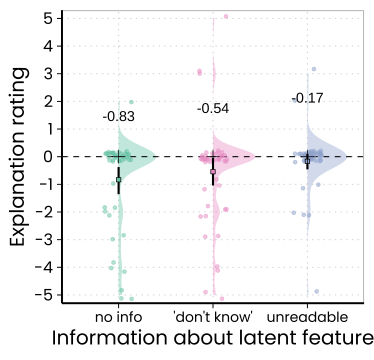

To see a demo of the experiment in a separate browser window, click here.
To download the program files of the experiment, click here.
The data set contains the following columns:
This study (\(N~= 144\)) further tested the influence of pragmatic factors using an experimental scenario similar to one tested in . The goal of this study was to test how the way the information about the latent feature is presented influences pragmatic assumptions about the feature’s state. Subjects learned about two different, equally frequent, gene mutations leading to abnormal levels of certain blood substances. One mutation had two effects and the other one only of these two effects. In the test phase, subjects received information about a patient known to have one of the two mutations. To get a diagnosis, blood tests were ordered, but only the presence of the undiagnostic symptom could be established. Different conditions varied what information was given about the latent (unique) symptom. In one condition, the status of the unique symptom was not mentioned at all (like in Experiment~1). In another, it was said that its status was ``uknown’’ (also like in Experiment~1). These conditions warrant the pragmatic assumption that this feature is more likely absent, especially the condition in which the feature was not mentioned at all. In a third condition, a reason was provided for why the latent feature’s status was unknown. Crucially, this reason was supposed to be pragmatically unrelated (i.e., undiagnostic) to the symptom’s status: Subjects read that a cup of coffee was accidentally spilled over the printout listing the results of the patient’s blood tests. As a result, the results for the latent (diagnostic) symptom were not readable. It was predicted that subjects’ tendency to show a bias should be minimal in this condition because a stain of coffee that accidentally prevents the assessment of the latent feature’s status should be seen as unrelated to its status.
One hundred and forty-four subjects (\(M_{age}\,= 35.34\), \(SD_{age}\,= 13.48\), age range 19 to 78 years) recruited via the online platform participated in this online study and provided valid data. The inclusion criteria were a minimum age of 18 years, English as first language, and an approval rate (concerning subjects’ participation in online studies hosted via prolific) of 90 percent. To ensure that all participants are able to understand the written instructions, prolific workers with “no formal qualifications” for the criterion “highest education level completed” were excluded from participation. Subjects also were asked to take part via PC or Laptop, and not via Tablet or Smartphone.
Subjects were alternately assigned to one of three theoretically relevant conditions, which manipulated what information about the latent feature was presented in the test phase (no information vs. “you don’t know” vs. “unreadable”). There were several counterbalancing factors that will be described in more detail below. To see a demo of the experiment, click here.
Subjects read the following medica scenario about two gene mutations alatering blood substances:
Please read the following fictitious scenario thoroughly:
Imagine that you are a doctor. Below is some information about two diseases, Vilosa and Pylium.
- Vilosa always causes abnormal Gludon blood levels.
- Pylium always causes abnormal Gludon and Lian blood levels.
Below you see a graphical illustration of the effects of the two diseases.
- Vilosa and Pylium occur equally often.
- A study of 1000 people found that 250 of them had abnormal Lian levels.
Whether the single-effect cause was labeled Vilosa or Pylium was counterbalanced between subjects. Whether the effect of the single-effect cause was Gludon or Lian was also counterbalanced between subjects.
On the same screen below the description, subjects were asked a number of comprehension check questions. Only the data of subjects whor responded correctly to these questions were recorded for analyses. Run the demo of the experiment to see these questions.
In the test phase, subjects were presented with the following situation:
As a reminder, below you see again the graphs showing the effects of the two diseases.
Please imagine the following scenario:
One of your patients, Patient #890, definitely has either Vilosa or Pylium, but you aren’t sure which. Therefore, you ordered blood tests for the patient. The tests confirmed that the patient has abnormal levels of Gludon.
Which disease do you think Patient #890 is most likely to have?
The scenario description above is the one from the condition in which the latent feature was not mentioned at all in the description of the patient. In the condition in which the latent feature’s status was described as “unknown”, subjects read:
You don’t know whether the patient’s Lian levels are normal or abnormal.
And in the condition in which a plausible reason for ignorance about the latent feature’s status was given that was supposed to be unrelated to the latent feature’s status, subjects read:
The letter with the results has just come back. Unfortunately, you accidentally spill your cup of coffee over the document and now only part of it is still readable. From what is still readable, you can see that Patient #890 indeed has abnormal levels of Gludon. However, due to a big stain of coffee right where the results for the Lian levels are printed, you cannot see whether or not the Patient #890 also has abnormal levels of Lian.
Subjects provided their answer on an eleven-point rating scale whose endpoints were labeled “Definitely Vilosa” and “Definitely Pylium”. The orientation of the scale was counterbalanced between subjects. The scale’s midpoint was labeled “50:50 (both equally likely)”.
Subjects also provided explanations of their ratings on the following screen. They then provided demographic data, were given the opportunity to report any technical issues, and ended the study on a short debriefing screen.
Subjects’ ratings are summarized in the graph below:

As can be seen in the graph, most subjects in all conditions were unbiased. Also, most subjects who showed a narrow latent scope preference were in the “no info” (\(M~= -0.83\), 95% CI [\(-1.3\), \(-0.40\)]) and the “don’t know” (\(M~=-0.54\), 95% CI [\(-1.04\), \(-0.10\)]) conditions. In the “unreadable” condition, where an explanation for the unknown state of the relevant feature was provided that shouldn’t allow any pragmatic conclusions about the feature’s actual status, almost all subjects responded correctly (\(M~= -0.17\), 95% CI [\(-0.46\), \(0.10\)]). A polynomial contrast analysis over these three means revealed a significant linear trend, estimate~\(= 0.47\), \(t(141)~= 2.13\), \(p~< .03\). No other trend was significant. This analysis confirms that the observed narrow latent scope biases tend to decrease from the “no info” over the “‘don’t know’” to the “unreadable” condition.
This study complements Experiment~1b, as it demonstrates that previous studies might have overestimated genuine narrow latent scope biases because they didn’t sufficiently control for pragmatic reasons that render the narrow latent scope explanation more probable.
2023 ANONYMIZED AUTHOR.